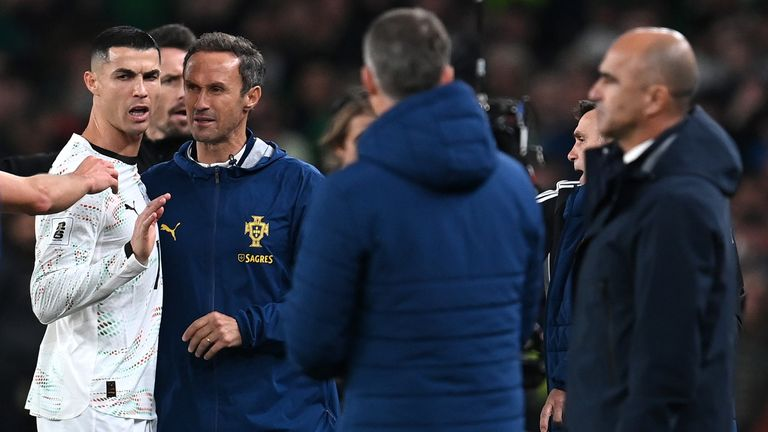

First National-Team Red Card — 2025 Qualifier
A historic moment: On 13 November 2025, in European qualifying for the 2026 US-Canada-Mexico World Cup, Portugal travelled to face the Republic of Ireland at Dublin's Aviva Stadium. In the 61st minute, the 40-year-old Ronaldo, off the ball, swung an elbow into the back of Irish defender Dara O'Shea. Referee Glenn Nyberg first showed yellow, then upgraded to a straight red after a VAR review. It was Ronaldo's first red card in 226 international appearances, and the 14th of his career.
A foe reunited: Most dramatically, the elbow victim was Dara O'Shea — the same player from the 2021 slap incident (see the O'Shea slap entry). Four years earlier in Faro, Ronaldo slapped O'Shea and escaped; four years on in Dublin, elbowing the same O'Shea, he could not escape again. Irish fans joked that 'the late red card finally arrived' — fate closing the loop in darkly comic fashion.
Pre-match foreshadowing: Before kick-off Ireland's manager Heimir Hallgrímsson publicly pressured the Swedish referee Nyberg, urging him 'not to let Ronaldo referee the match'. Ronaldo himself promised to 'be a good boy' — only to break that promise within 61 minutes.
Ronaldo's reaction: As he was sent off, with Irish fans booing and jeering, Ronaldo ironically applauded and raised both thumbs. Walking off, he made a point of approaching the Irish bench and exchanged words with manager Hallgrímsson. Asked afterwards about the exchange, Hallgrímsson revealed: 'He complimented me for pressuring the referee. It's his own fault for what he did on the pitch — unless I really got inside his head.' He added: 'It's just one little silly moment from him.'
The manager defends him: Portugal manager Roberto Martínez stoutly defended Ronaldo afterwards: 'This is a captain who had never been sent off in 226 matches — that alone deserves praise. I think today's call was a bit harsh… he was being pulled and shoved in the box for 58 minutes, and when he shook off the defender the cameras amplified it into an elbow. What really displeases me is that the opposing manager was talking about the referee being influenced before the match, and then a big defender went down theatrically.'
Ban risk: The red card carried serious consequences. Under FIFA's disciplinary code, serious foul play brings at least a 2-match ban, violent conduct at least 3. Because bans must be served in official matches (friendlies don't count), Ronaldo was highly likely to miss Portugal's opening group game at the 2026 World Cup. FIFA was under enormous public pressure over how to handle the case.
Match result: Down to ten men, Portugal crashed to a 0-2 upset, with Irish striker Troy Parrott scoring twice. It was Portugal's first defeat of this qualifying campaign. Next up was a home game against Armenia, where a win would seal their World Cup spot, but the star's ban clouded the picture — one elbow wrecking the team's rhythm.
Historical significance: At 40 years and several months old, Ronaldo finally filled in the 'national-team red card' puzzle piece at the end of his career. ESPN wrote: 'The zero-red run across 226 international matches is over — perhaps the only record he never wanted to own.' With this, his career red-card tally reached 14, the contrast with Messi's 3-4 all the more glaring.